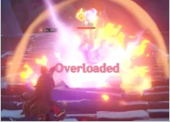
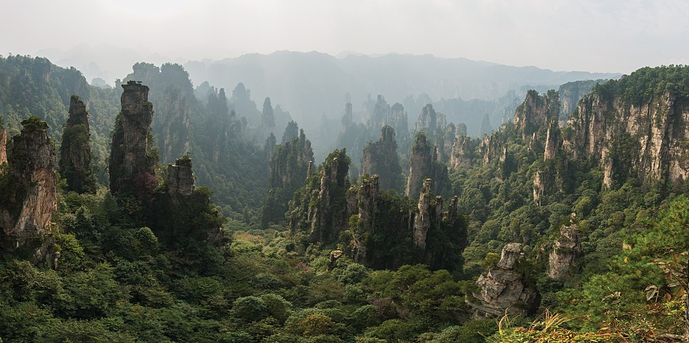

Genshin Impact is an action role-playing game developed and published by Chinese game house miHoYo. It was released for Microsoft Windows, PlayStation 4, Android, and iOS in September 2020, for PlayStation 5 in April 2021, and, as of September 2021, is planned for future release on Nintendo Switch. The game features an open-world environment and an action-based battle system, using elemental magic and character-switching. Since its release, the game has been free-to-play and is monetized through gacha game mechanics whereby players can obtain new characters, weapons, and other resources. Genshin Impact is the next title by miHoYo, following Honkai Impact 3rd (2016).
Genshin Impact takes place in the fantasy world of Teyvat, which is home to seven distinct nations,[b] each of which is tied to an element[c] and ruled by a god associated with it.[d] The story follows a twin, referred to as the Traveler (with the gender chosen by the player), who has traveled across many other worlds but has become separated from their twin sibling (of the opposite gender) in Teyvat. The Traveler travels in search of their lost sibling with their companion Paimon, and becomes involved in the affairs of Teyvat's nations and gods.
Development began in early 2017, and was designed to combine elements of the real world with eastern animation styles (see Chinese, Japanese, and Korean animation). To supplement the game, miHoYo released a companion manga, and has plans for further tie-in media. The game received generally positive reviews, with critics praising the combat and open-world freedom, while some criticized its endgame content and monetization model. A commercial success, the game grossed over $1 billion within six months of release.
Genshin Impact is an open-world action role-playing game that allows the player to control one of four interchangeable characters in a party.[2] Switching between characters can be done quickly during combat, allowing the player to use several different combinations of skills and attacks.[3] Characters may have their strengths enhanced in various ways, such as increasing a character's level and improving artifacts and the weapons that the character equips.[4] In addition to exploration, the player can attempt various challenges for rewards. Scattered across Teyvat are bosses and challenges that reward highly valuable resources, such as Stormterror and the Electro Hypostasis, but claiming them uses up a currency called resin, which slowly regenerates over time.[5] Completing these challenges grants the player progress towards increasing their Adventure Rank, which in turn unlocks new quests, challenges, and raises the World Level.[6] The World Level is a measure of how strong the enemies within the world are and the rarity of rewards that defeating them gives.[7]
The player can control their character and perform actions such as running, climbing, swimming, and gliding which are limited by stamina.[8][3] Some characters possess abilities that can alter the environment, such as freezing water to create a path that can aid the player in traversing terrain.[3] Many teleportation nodes exist throughout the world that players can warp to, and statues known as the Statues of The Seven can heal and revive characters and provide benefits such as increasing player stamina.[9] Items such as food and ore may be procured from the open world, while enemies and treasure chests drop other types of resources that may be used in enhancing a character's strength. Players can obtain food from hunting animals, gathering fruit and vegetables, or purchasing them from a store. Ingredients that can be cooked into meals that regenerate characters' health or boost various statistics.[10] Players can also procure ore that can be refined and then used to enhance weapon strength or create weapons.[11][12]

Each character has two unique combat skills: an elemental skill and an elemental burst. The elemental skill can be used at any time except for the cooldown period immediately after use.[13] In contrast, the elemental burst has an energy cost, requiring the user to amass sufficient elemental energy by defeating enemies or inflicting elemental status effects.[14] Characters have control over one of seven natural elements: Cryo, Dendro,[e] Pyro, Hydro, Anemo, Electro and Geo, which correspond to ice, nature, fire, water, air, electricity, and earth respectively.[15] These elements can interact in different ways; for example, if a Hydro attack hits a target, the enemy will be inflicted with the "Wet" status effect, and if they are hit with a Cryo attack, it will inflict "Cold".[15] These two status effects combine into the "Frozen" status effect, temporarily preventing the target from performing any actions or until the player deals enough physical damage to the enemy.[15] Switching between characters during combat and executing those skills allows those elemental interactions to take place.[16] Certain elemental abilities may be required to solve puzzles within the overworld.[3]
A multiplayer mode is available in the form of co-op. Up to 4 players can play together in the overworld and join domains.[17] Player matching can either be done by requesting to connect with another player.[17] If the player wishes to clear a domain with other players, they will be automatically matched up with others looking to tackle the same objective.[18] The game features cross-platform play, so players on any platform can play with each other.[19]
By completing quests to advance the story, the player can unlock five additional playable characters,[20] and more characters can be obtained via a gacha mechanic and in-game events.[21][22][23] Several premium in-game currencies, obtainable through in-app purchases and playing the game, can be used to obtain characters and weapons through the gacha system.[24] A pity system guarantees that the player will receive rare items after a set number of draws.[25]
Genshin Impact takes place in the world of Teyvat, and is composed of seven major nations being Mondstadt, Liyue, Inazuma, Sumeru, Fontaine, Natlan, and Snezhnaya, each ruled by a god.[‡ 1] The mysterious floating island of Celestia is allegedly home to gods and mortals who have ascended to godhood through great, heroic feats.[‡ 2] Underground lie the ruins of the nation of Khaenri'ah which was destroyed by gods 500 years before the events of the game.[‡ 3][‡ 4] Unlike the seven major nations, Khaenri'ah was not ruled over by a god. The player character, the Traveler (male or female depending on the player's choice), is separated from their twin and becomes trapped in Teyvat. They are joined by a companion, Paimon, as they journey through Teyvat in search for their lost sibling. The male traveler is named Aether, and the female traveler is named Lumine; although players can choose the name they want to be referred by, the Traveler's sibling (whichever twin not chosen at the start of the game) refers to the Traveler by either Aether or Lumine (depending on the gender of the player's chosen twin), regardless of their custom name.
Each nation is associated with and worships one of The Seven, a group of gods known as Archons who each preside over one of the seven nations. Each member of The Seven is tied to one of the game's elements, and is also reflected in their nation's aspect. Barbatos, Rex Lapis, Raiden Shogun, and Tsaritsa are archons of Mondstadt, Liyue, Inazuma and Snezhnaya, respectively.[‡ 5] However, the god who is the Archon may change over time as Archons pass away.[‡ 6] Specific individuals chosen by the Archons are granted a Vision — magical gemstones that give their bearers the ability to command an element and the potential to ascend to godhood and reside in Celestia.[‡ 7][‡ 8]
Mondstadt, the city of freedom, worships the Anemo Archon Barbatos and sits on an island in the middle of a lake.[‡ 9] The city is protected by the Knights of Favonius, who are tasked with protecting Mondstadt and its citizens.[‡ 10] To the southwest, Liyue worships the Geo Archon Rex Lapis and is the largest market harbor in Teyvat. The harbor city is presided over by the Liyue Qixing: a group of business leaders, and ancient guardians known as Adepti, magical beings that includes Rex Lapis himself.[‡ 11][‡ 12] Across the sea lies the isolationist island nation of Inazuma, overseen by the tri-commission and the authoritarian regime of Raiden Shogun.
Snezhnaya, ruled by the Cryo Archon Tsaritsa, send out diplomats named the Fatui who maintain a friendly appearance while using more underhanded methods secretly.[‡ 13] The Fatui are also led by the Eleven Harbingers, individuals given extraordinary powers and executive authority by the Tsaritsa.[‡ 14] Among them include Scaramouche, La Signora, and Tartaglia, who are respectively the sixth, eighth, and eleventh of the Eleven Harbingers. In addition to the Fatui, another antagonistic faction in the game is the Abyss Order legion of monsters that declares themselves to be enemies to all of humanity, and are led by the "Prince" or "Princess", the lost sibling of the Traveler.[‡ 15][‡ 16][‡ 17]
A pair of twins who travel across the stars and visit different worlds arrive in the land of Teyvat, but find that the nation of Khaenri'ah is under cataclysmic siege. Attempting to leave to avoid the carnage, the twins are separated by an unknown god, who takes one and seals away the other. Five hundred years later, the sealed twin, referred to as the "Traveler", awakens and meets Paimon. The pair travel to nearby Mondstadt to start their search for the Traveler's missing twin.
The duo arrive at Mondstadt, and encounter a dragon named Stormterror which attacks the city. Aided by an unknown entity, the Traveler fends off Stormterror and is recognized by Jean, acting Grand Master of the Knights of Favonius. The Traveler helps the Knights restore order to the region, and then meets Venti, a local bard who comes up with a plan to stop Stormterror, whose true name is Dvalin. Venti requests for them to retrieve a holy lyre so that he may play it to Dvalin, calming him. After retrieving the lyre, which was first stolen by Fatui, Venti attempts to calm Dvalin but realizes that the Abyss Order have been manipulating him, and Venti's true identity is revealed: Barbatos, the Anemo Archon, who was also the one who guided the Traveler during their fight with Dvalin. The Traveler, accompanied by Jean, Diluc and Venti, pursue Dvalin to his domain and free him from the Abyss Order's influence. Returning to Mondstadt, Venti is ambushed by Fatui Harbinger La Signora, who steals his Gnosis.
Venti advises the Traveler to travel to Liyue next to meet Rex Lapis, the Geo Archon. However, during a ritual, Rex Lapis is apparently killed, and his body hidden. The Traveler meets Fatui Harbinger Childe, who is secretly searching for Rex Lapis' gnosis. Childe manipulates the Traveler to destabilize Liyue by relaying the news of Rex Lapis' death to the Adepti, who lose faith in the Liyue Qixing. He then works with the Traveler and Zhongli, a funeral parlor consultant who is overseeing Rex Lapis' funeral. While working with Zhongli, Childe discovers the location of Rex Lapis' body, which had been hidden away. The Traveler confronts Childe who attempts to take the Gnosis but is unable to find it, concluding that Rex Lapis is still alive. To lure out Rex Lapis, Childe summons Osial, an ancient god once defeated by Rex Lapis, but the combined forces of the Traveler, the Liyue Qixing and the Adepti defeat it. Afterwards, Traveler discovers that Zhongli is the human vessel of Rex Lapis, who gives his Gnosis to La Signora as part of a discreet contract with the Tsaritsa. Zhongli explains he faked his death as he wished to step down from his role as Archon, and that their defense of Liyue proved that they did not need his protection. Back in Mondstadt, the Traveler meets a mysterious individual named Dainsleif, and together they investigate a plot by the Abyss Order to create an artificial god to topple Celestia. While investigating, the Traveler reunites with their sibling, discovering that they have become the leader of the Abyss Order. The sibling reveals that Dainsleif was a guard of Khaenri'ah, and failed its people when the nation fell 500 years ago. Remarking that the Traveler will come to understand the true nature of the world at the end of their journey, the sibling departs, and Dainsleif chases after them. The Traveler attempts to follow but is unable to, and resolves to continue their journey.
The Traveler decides that their next destination will be Inazuma; however, the nation has closed off its borders under order of the Electro Archon, the Raiden Shogun. They find a ship captain, Beidou, who grants them passage to Inazuma after the Traveler wins her martial arts tournament. During the voyage, the Traveler learns more about the oppressive rule of the Raiden Shogun and her decree that all Visions are to be confiscated. Arriving on Inazuma, Beidou introduces the Traveler to Thoma, the Chief Retainer of the Kamisato Clan, who promises them an audience with the Raiden Shogun and invites them to the Kamisato Estate to meet Ayaka, the clan's eldest daughter. The Traveler reluctantly assists the Kamisato Estate in resisting the Vision Hunt Decree. Thoma is captured by the Tenryou Commission and is planned to have his Vision confiscated by Raiden Shogun, but the Traveler intervenes. Although they lose the duel with Raiden Shogun, they are able to escape with Thoma and his Vision. Now with a bounty on their head, the Traveler seeks asylum with the resistance and helps them fight the Shogun's army. The Traveler discovers that the Fatui was behind the Vision Hunt Decree and raids a Fatui facility in response, but they are ultimately defeated by the Fatui Harbinger Scaramouche. However, he spares their life after the Guuji of the Grand Narukami Shrine, Yae Miko, gives Scaramouche the Raiden Shogun's gnosis. Yae Miko brings the Traveler to the shrine, where she reveals she used to be close friends with the Raiden Shogun and teaches the Traveler how to fight her. She then tasks the Traveler to uncover evidence that the Fatui was behind the decree, which she then gives to Kujou Sara, a member of the Tenryou Commission. Sara attempts to deliver the evidence to the Raiden Shogun, but is knocked out in front of her by La Signora. The Traveler confronts and defeats La Signora, who is subsequently killed by the Raiden Shogun before she once again challenges the Traveler to a duel. Thanks to the interference of Yae Miko and the power of the confiscated visions, the Traveler defeats the Raiden Shogun. Yae Miko and the Raiden Shogun reconcile, and she repeals the Vision Hunt Decree.
Genshin Impact began development as early as late January 2017, with an initial team of 120 people, which grew to 400 by the end of that year, and reached 700 by February 2021.[26][27] miHoYo revealed the game in June 2019 at E3 2019.[28][29] The game had a development and marketing budget of around $100 million, making it one of the most expensive video games to develop.[30] Between the announcement and release closed beta tests were held, allowing invited players to explore and interact with the open world.[31][32] The game includes voice-overs in four languages, and 13 different languages for text.[33][34][35][f]

The Legend of Zelda: Breath of the Wild is held in high regard by the development team, and is cited as one of the main inspirations for Genshin Impact.[36] Development was aimed at making the game different and fun in terms of its quest and combat systems as well as its random events and mode of exploration.[37] The game was designed as a cross platform title, and developing the game for PC and PlayStation platforms allowed the developers to raise graphical fidelity for the game, such as rendering realistic shadows.[36] The overall artistic vision of the game is intended to combine "anime" art style with more key elements from real world cultures.[38] For example, Liyue was first conceived of as a reimagining of Chinese culture through a fantasy perspective, and was combined with reference material from Zhangjiajie National Forest Park and Tianmen Mountain to create the region.[38]
Yu-Peng Chen of HOYO-MiX composed the game's original score, which was performed by the London Philharmonic Orchestra, the Shanghai Symphony Orchestra, and the Tokyo Philharmonic Orchestra.[39][40] The approach to creating the soundtrack is to immerse players within the game, and provide emotional and beautiful melodies.[41] Based upon a foundation of Western music, the score also has regional and cultural influences added depending upon the region.[42] For example, in Mondstadt Chen utilized woodwind instruments to reflect Mondstadt's association with wind and freedom.[41] In contrast, the battle themes utilize polyphony and other composing techniques, as well as mimicking orchestrion elements from composers such as Beethoven.[41] A soundtrack album featuring music from the Mondstadt chapter of the game, "City of Winds and Idylls", was released digitally on October 15, 2020.[43] For his work on the soundtrack Chen was awarded the "Outstanding Artist — Newcomer/Breakthrough" at the 2020 Annual Game Music Awards.[41] "Jade Moon Upon a Sea of Clouds", a soundtrack featuring music from the Liyue region, was released digitally on November 6, 2020.[44] Dragonspine's soundtrack was released on April 2, 2021, titled "Vortex of Legends".[45] A commemorative soundtrack for Version 1.0 of the game titled "The Shimmering Voyage" was released on July 19, 2021. Chen has expressed interest in releasing the soundtracks on CD, as well as hosting a concert in the future.[41]